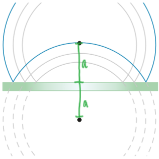

反射本章節中，我們將以水波介紹波的反射現象。 |
引言在樓梯大喊時，你是否曾會聽到自己的回應。 |
反射的發生
法綫與入射波之間的夾角為入射角，而法綫與反射波之間的夾角為反射角，根據反射定律，入射角等於反射角。 **在發生反射後，波的速率、頻率與波長均沒有改變 |
如何繪畫反射圖像當我們要畫一個波的反射影像時，我們要根據物距=像距，找出虛像（下圖灰色部分）的位置，再繪畫與原來的波一樣的圖像，即可得出反射影像。 以圓形波作爲示範 先找出S點與圓形波之間的距離，再在鏡子后標出S'，再模仿原本的波繪畫，在鏡子左方的圖像即為最終的影像（下圖）。  |
Loading |
| ！點擊圖片了解更多！ |